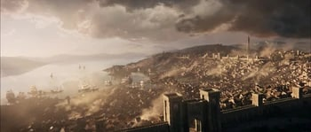

Fantasy Comprendium
Lugares
“It was the kind of town that made you feel like Humphrey Bogart: you came in on a bumpy little plane, and, for some mysterious reason, got a private room with balcony overlooking the town and the harbor; then you sat there and drank until something happened.” ― Hunter S. Thompson, The Rum Diary

Lugares
Lugar de interes es cualquier zona relevante, estructura, obra de ingenieria o maravilla de la naturaleza que atrae a los visitantes a un lugar en el mundo. La Columna de Nelson en Londres es un lugar de interes, al igual que el Monte Rushmore en los Estados Unidos o una ciudad habitada. Sin embargo, no todos los objetos o lugares de tamaño significativo son un lugar de interes: es posible que la bola de hilo más grande del mundo nunca alcance esa estatura (aunque bien podría valer la pena una visita).

puertas de baldur

Agregar